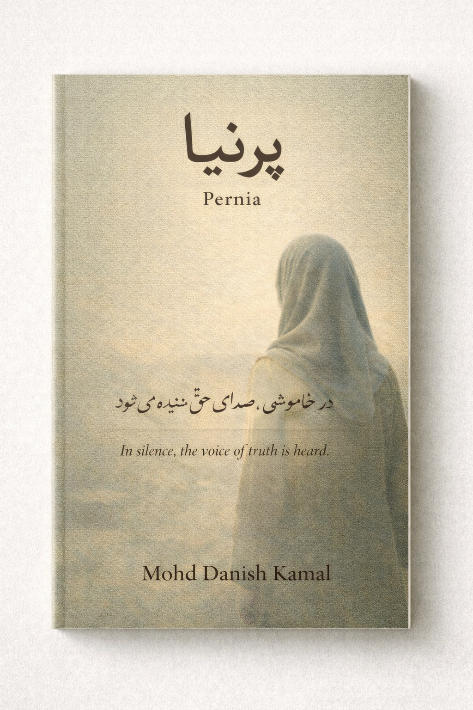

Background
Mohd Danish Kamal is an Indian author and creative strategist based in Meerut, Uttar Pradesh. He completed his schooling at Meerut Public School, Meerut, and his graduation from NAS College, Meerut. He holds a Master’s degree from Jamia Hamdard University, New Delhi.
Writing
His writing includes the book Shadows of Last Thought and other works such as Pernia. He continues to write and maintain ongoing writing projects on his official blog.
The Platform
Inkscribers
Alongside his creative work, Mohd Danish Kamal founded Inkscribers, a platform created to support new and first-time writers working toward their debut. The platform exists to provide structure and direction for individuals navigating the early stages of creative and publishing work.
Inkscribers supports emerging voices as they move from initial ideas to completed work through an organized and practical framework.
Selected Work

One day, schools closed without warning.The president fled.Pernia is a short literary fiction about Sophia, a young girl with dreams of becoming an economist,
and how her life changes abruptly thereafter.
The highest point of a masterful story is when it dissolves into reality without being noticed